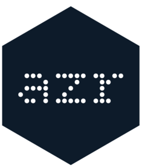

Build a URI + format manifest for an azr_dataset or azr_catalog
Source: R/az-dataset.R
azr_resolve_dataset.RdLike azr_dataset_uri(), but each entry also carries the dataset's format,
which together are what a reader (e.g. sparklyr::spark_read_source())
needs to load a dataset.
Arguments
- x
An azr_dataset or azr_catalog object.
- ...
Additional arguments passed to methods:
tierEnvironment tier name (a key in the dataset's
storage). Defaults to thedataset_tieroption (options(azr.dataset_tier = ...)orAZR_DATASET_TIER, default"prod"); seeazr_options().uri_typeURI type:
"https"or"hadoop"(the Hadoop ABFS URI formscheme://container@account.dfs.../path, used by Spark, Flink, Trino, and anyhadoop-azureconsumer).nameFor an azr_catalog only: an optional character scalar selecting a single dataset by name. If omitted, URIs for every dataset are returned.
Value
For an azr_dataset, or an azr_catalog with name supplied, an
azr_dataset_manifest. For an azr_catalog without name, a named list
of azr_dataset_manifest objects, keyed by dataset name.
Examples
ds <- azr_dataset(
name = "orders",
scheme = "abfss",
container = "raw",
storage = list(prod = "stprod001"),
path = "sales/orders",
format = "delta"
)
azr_resolve_dataset(ds, tier = "prod")
#> <azr_dataset_manifest:orders>
#> uri: abfss://raw@stprod001.dfs.core.windows.net/sales/orders
#> format: delta
catalog <- azr_catalog(datasets = list(ds))
azr_resolve_dataset(catalog, tier = "prod")
#> $orders
#> <azr_dataset_manifest:orders>
#> uri: abfss://raw@stprod001.dfs.core.windows.net/sales/orders
#> format: delta
#>